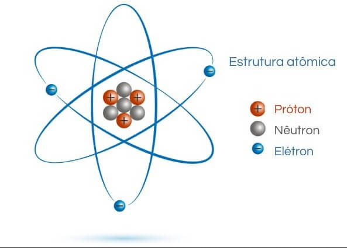
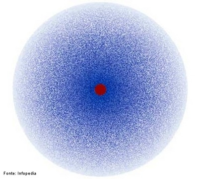
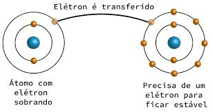
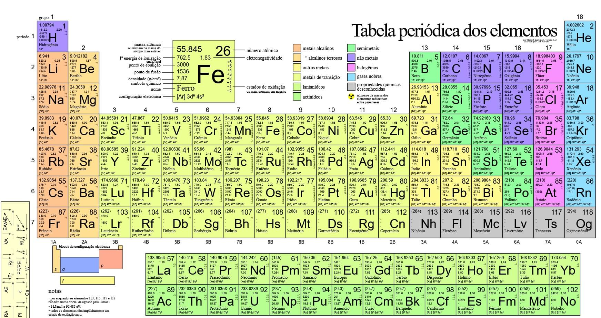
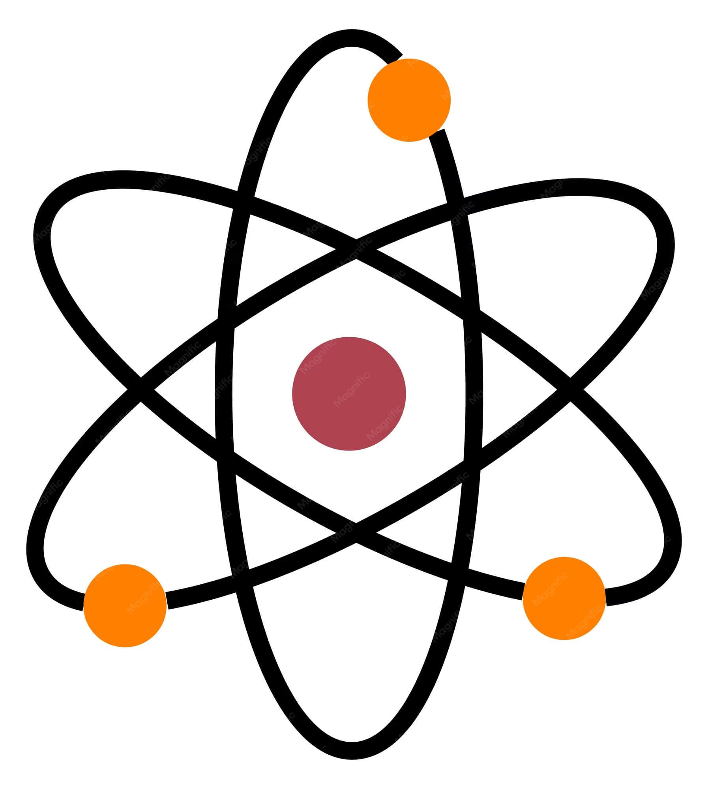
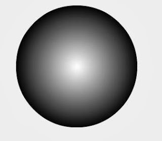
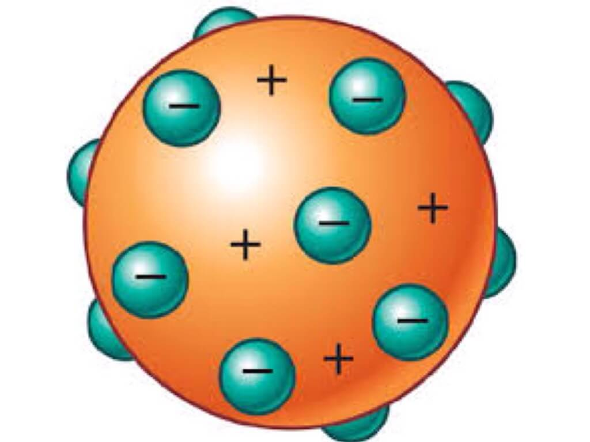
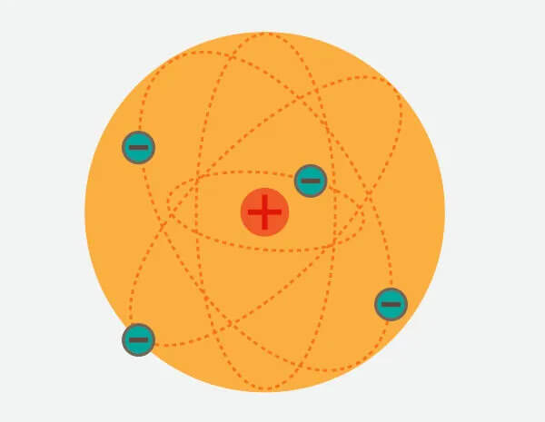
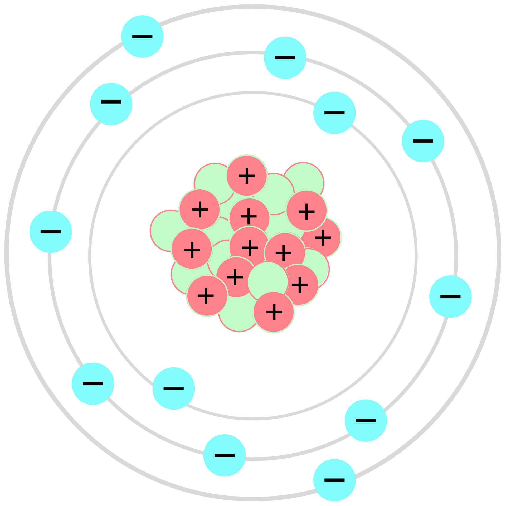
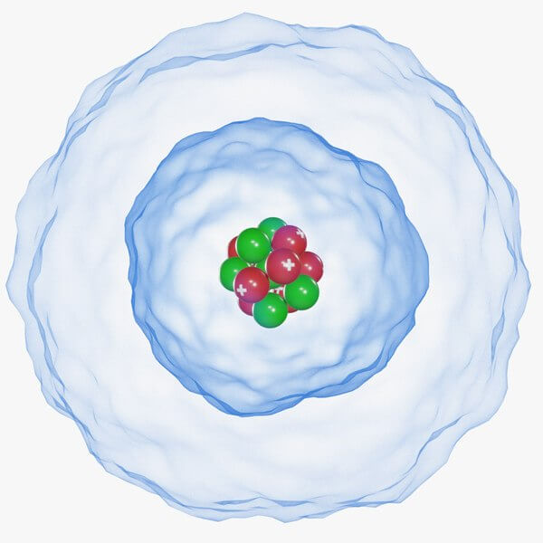

O Átomo
O que é um átomo?
O átomo é a menor unidade da matéria que conserva as propriedades químicas de um elemento. Durante séculos, filósofos e cientistas debateram a natureza da matéria — foi o filósofo grego Demócrito quem primeiro propôs, por volta de 400 a.C., que a matéria seria formada por partículas indivisíveis, às quais chamou de átomos (do grego atomos, "indivisível"). Séculos depois, a ciência moderna confirmou — e complexificou — essa ideia.
Hoje sabemos que o átomo não é de fato indivisível: ele é composto por partículas subatômicas. Sua estrutura consiste em um núcleo central, formado por prótons e nêutrons, ao redor do qual orbitam os elétrons. O núcleo concentra praticamente toda a massa do átomo, enquanto os elétrons ocupam uma região muito maior chamada de nuvem eletrônica.

Partículas subatômicas
As três partículas fundamentais do átomo são os prótons, os nêutrons e os elétrons. Cada uma possui características próprias que determinam o comportamento do átomo:
- Prótons — partículas com carga elétrica positiva, localizadas no núcleo. O número de prótons define o número atômico (Z) e determina a identidade do elemento químico.
- Nêutrons — partículas sem carga elétrica, também no núcleo. Junto com os prótons, formam a massa atômica. Átomos com o mesmo número de prótons mas diferentes números de nêutrons são chamados de isótopos.
- Elétrons — partículas com carga negativa que orbitam o núcleo em camadas de energia. São responsáveis pelas ligações químicas entre os átomos.
Modelos atômicos
A compreensão do átomo evoluiu ao longo do tempo por meio de diferentes modelos científicos. Cada modelo foi uma tentativa de explicar os experimentos da época:
Modelo de Dalton (1808) — John Dalton propôs que os átomos eram esferas maciças e indivisíveis, como bolas de bilhar. Cada elemento seria formado por átomos idênticos entre si.
Modelo de Thomson (1897) — Após descobrir o elétron, J.J. Thomson propôs o modelo do "pudim de passas": o átomo seria uma esfera positiva com elétrons espalhados por sua superfície, como passas num pudim.
Modelo de Rutherford (1911) — Ernest Rutherford, através de seu famoso experimento com partículas alfa, descobriu que o átomo possui um núcleo central positivo pequeno e denso, com os elétrons orbitando ao redor, como planetas ao redor do Sol.
Modelo de Bohr (1913) — Niels Bohr aperfeiçoou o modelo de Rutherford propondo que os elétrons orbitam o núcleo em níveis de energia fixos, chamados de camadas ou órbitas. Cada camada corresponde a um nível de energia específico.
Modelo quântico (atual) — O modelo moderno descreve os elétrons não em órbitas fixas, mas em regiões de probabilidade chamadas orbitais, onde é mais provável encontrá-los. Este modelo é baseado na mecânica quântica.

Número atômico e massa atômica
O número atômico (Z) representa a quantidade de prótons no núcleo de um átomo. É ele que define qual elemento químico o átomo representa — todo átomo com 6 prótons, por exemplo, é carbono. Em um átomo neutro, o número de elétrons é igual ao número de prótons.
A massa atômica (A) é a soma do número de prótons e nêutrons no núcleo. Os elétrons têm massa tão pequena que são desconsiderados nesse cálculo. A relação entre essas grandezas é expressa pela fórmula: A = Z + N, onde N é o número de nêutrons.
Camadas eletrônicas
Os elétrons estão distribuídos em camadas ao redor do núcleo, identificadas pelas letras K, L, M, N, O, P e Q. Cada camada comporta um número máximo de elétrons, determinado pela fórmula 2n², onde n é o número da camada:
- Camada K (n=1): máximo de 2 elétrons
- Camada L (n=2): máximo de 8 elétrons
- Camada M (n=3): máximo de 18 elétrons
- Camada N (n=4): máximo de 32 elétrons
- Camada O (n=5): máximo de 50 elétrons
- Camada P (n=6): máximo de 72 elétrons
- Camada Q (n=7): máximo de 98 elétrons
A camada mais externa de um átomo é chamada de camada de valência, e os elétrons nela presentes são os responsáveis pelas ligações químicas. Átomos tendem a ganhar, perder ou compartilhar elétrons para atingir 8 elétrons na camada de valência — regra conhecida como regra do octeto. Na prática, nenhum elemento conhecido utiliza as camadas O, P e Q até sua capacidade máxima — os elementos mais pesados da tabela periódica chegam até a camada Q, mas com poucos elétrons nela.
Galeria
Representações visuais dos conceitos apresentados.


Referências
- BRASIL ESCOLA. Modelos Atômicos. Disponível em: brasilescola.uol.com.br
- BRASIL ESCOLA. Estrutura do Átomo. Disponível em: brasilescola.uol.com.br
- MUNDO EDUCAÇÃO. Camadas Eletrônicas. Disponível em: mundoeducacao.uol.com.br
- MUNDO EDUCAÇÃO. Número Atômico e Número de Massa. Disponível em: mundoeducacao.uol.com.br
- INFO ESCOLA. Tabela Periódica. Disponível em: infoescola.com
Tabela Periódica
Conteúdo sobre a tabela periódica será adicionado em breve.
Formulário
Preencha os dados abaixo para receber mais informações sobre química.

Painel de Fotos
Modelos atômicos ao longo da história, como dito antes:




